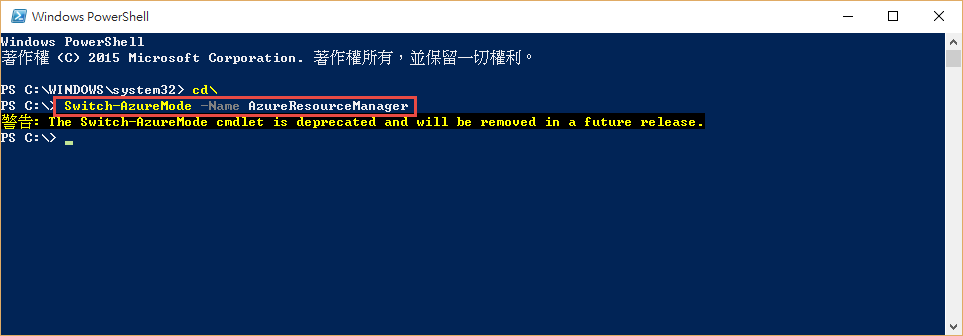

前言
很久很久以前，有了一個雲端服務，叫做 Azure ，但這個雲端服務在強大，卻還是少了一個關鍵的東西，那就是 DNS Service ，而在今年，這個東西終於出現了!! ( 不過目前還沒有UI介面就是了= =..)
但不管怎樣，有了 DNS Service 後，終於可以把 VM 扔掉了~~
這篇基本上是照著官方文件進行操作，再補上自己的理解，有興趣的朋友，也可以直接參考原文。
設定 Azure DNS PowerShell
如官方文件一開始，因為我們目前沒有 UI ，所以只能透過 PowerShell 來進行管理，所以首先，我們必須先設定 PowerShell，我們可以先用以下指令切換到 ARM 模式。
( ARM 模式 是新一代的 Azure 資源管理方案 )
1 | Switch-AzureMode -Name AzureResourceManager |
完成後就會如下圖。

眼尖的大家，應該會發現，為啥會出現這個警告!!
The Switch-AzureMode cmdlet is deprecated and will be removed in a future release.
是的，我們上面的這個指令，微軟預計在 2015年 9月 就會移除!!
大家第一個直覺一定是..搞屁阿..那我未來該怎麼辦??
有興趣的朋友可以參考這篇，這篇是微軟未來的規劃路線。
簡單的說，就是未來不會有 Switch-AzureMode 這個指令了，會變成，以前的 ASM指令，會在前面加上前贅詞，例如 New-AsmVM ，而 ARM 的指令則不變…
接下來，我們就可以登入帳號。
1 | Add-AzureAccount |
會很佛心地跳出一個視窗讓我們輸入帳號密碼~
{kind=link}
接著，因為每個帳號可能會有多個訂閱，所以這邊要選擇你要管理的訂閱。
1 | Select-AzureSubscription -SubscriptionName "MySubscription" |
{kind=link}
接著，你可以建立一個新的資源群組，如下指令，資源群組的名稱為 MyAzureResourceGroup，位置在美西。
當然你也可以用現有的資源群組，小弟這邊就使用 Study4 的資源群組，所以就不建立新的了。
( 資源群組是為了讓你管理 Azure 資源的一個策略群組，你建立的 DNS 並不會被限制在你資源群組的地區，例如下面的資源群組是美西，但你的 DNS 還是可以服務全球。)
1 | New-AzureResourceGroup -Name MyAzureResourceGroup -location "West US" |
Azure DNS 服務目前是由 Microsoft.Network 來提供，所以 Azure 訂用帳戶必須註冊這個 Provider，這樣才能使用 DNS 。
( 基本上這個只需要註冊一次即可 )
1 | Register-AzureProvider -ProviderNamespace Microsoft.Network |
{kind=link}
到這邊， PowerShell 就已經這定完成了!!
建立 DNS 區域
接下來，我們就可以掏錢來建立一個 DNS 區域了，我們可以輸入以下指令，建立一個 study4.tw 的區域，並且設定在 study4 的資源群組裡面。
1 | New-AzureDnsZone -Name study4.tw -ResourceGroupName study4 |
{kind=link}
完成之後，我們可以用以下指令來查看，通常建立完成之後，就會有 SOA 與 NS。
1 | Get-AzureDnsRecordSet -ZoneName study4.tw -ResourceGroupName study4 |
{kind=link}
設定父層的委派
簡單的說，以 Study4.tw 來說，要查到這個網址，會先從根開始查起，接下來會查到 tw 的 dns server，再從 tw Dns Server 查到 Study4.tw 的 DNS Server；我們剛剛已經建立了 Study4.tw 的 DNS Service，接下來，我們就要去父層那邊設定，告訴父層如果你要找 study4.tw ，應該要去哪個地方找相關的資訊。
我們這邊可以從剛剛下的 Get-AzureDnsRecordSet 指令查到 NS 的資訊，或使用底下的指令。
1 | Get-AzureDnsRecordSet -Name "@" -RecordType NS -zonename "study4.tw" -ResourceGroupName "study4" |
裡面就會顯示 Microsoft 提供的節點。
以小弟這邊來說，就會得到好幾台的節點，例如 : ns3-02.azure-dns.org
然後，我們就可以使用 ping 等工具，查到這台的 ip 位置，最後，我們就可以去父層做設定，如下圖，以 pchome 為案例，當然，你必須在 pchome 買網址，才能在 pchome 設定，如果你不是在 pchome 買的，就請到你購買網址的地方進行設定。
{kind=link}
完成後，( 最久會需要等 24hr )，我們就可以透過底下指令來進行測試。
1 | nslookup –type=SOA study4.tw |
設定紀錄
既然上面都準備好了，我們也可以查到 study4.tw 這個網域要去哪台 DNS Server 查詢了，接下來，我們的目標是希望 www.study4.tw 能對應到某台 web server ，而那台 web server 有獨立的 ip 位置，所以最後的步驟，當然就是要讓 www.study4.tw 能對應到相對的 ip 位置，也就是說，我們要在 DNS Service 上面加上 www ，來讓 DNS Service 能認得我們的 www ip位置，所以我們最後步驟，就把 www 加上去，就完工了!!
首先，我們可以下以下指令，來建立一個變數。
1 | $rs = New-AzureDnsRecordSet -Name "www" -RecordType "A" -ZoneName "study4.tw" -ResourceGroupName "study4" -Ttl 60 |
接下來，我們就可以 add 剛剛的變數，並且加上對應的 ip 位置。
1 | Add-AzureDnsRecordConfig -RecordSet $rs -Ipv4Address 134.170.185.46 |
完成之後，還要用 set 來通知 Azure DNS 更新。
1 | Set-AzureDnsRecordSet -RecordSet $rs |
最後，我們就可以透過 Get 來查詢，看看是否完成嚕!~
1 | Get-AzureDnsRecordSet –Name www –RecordType A -ZoneName study4.tw -ResourceGroupName study4 |
基本上就這樣，完成嚕!~
##參考資料